Рутинные операции ИП (ежемесячно) с использованием infakt.pl¶
Данный документ описывает типичные операции ИП-шника на ryczałt в программе infakt.pl. Минимальная настройка infakt описана здесь.
Зарегистрируйтесь в infakt по нашей ссылке и получите 100zł кэшбэка.
Выставление фактур¶
В последний день месяца (если у вас с заказчиком договоренность на помесячную оплату), или по факту выполнения (отгрузки) работ необходимо сгенерировать и выставить фактуру заказчику. Для этого перейдите в раздел Przychody и нажать кнопку Nowa faktura.
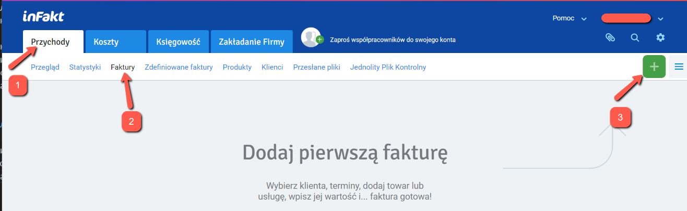
То же самое можно получить из списка контрагентов:
Przychody -> Klienci -> Nowa faktura
Для выбранного заказчика, либо из списка услуг:
Przychody -> Produkty, чекнуть нужную услугу, и выбрать Nowa faktura.
В новой фактуре выбираем/корректируем необходимые поля (если не выбрано):
- заказчика (из списка)
- дату оказания услуги (последний день месяца либо дату фактической услуги, если они нерегулярны)
- выбор варианта оплаты фактуры, наиболее вероятно это будет Przelew (перевод на банковский счет) и выбрать счет (если их несколько). А если ни один счет не добавлен, то сервис предложит его добавить
- услугу
- количество "услуги" (если почасовая, то кол-во отработанных часов, если фиксированная ставка, то оставляем 1, так как сумма нетто уже есть ставка)
- ставку VAT (более подробно - на странице, посвященной VAT)
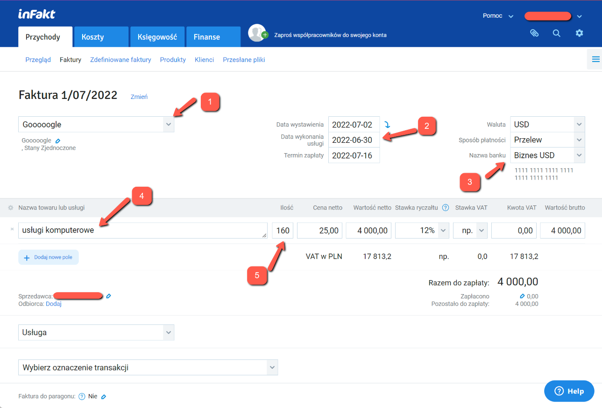
Нажимаете кнопку Zapisz szkic для сохранения данных. Фактура записана!
Важно
На этом этапе фактура еще не участвует в расчете налоговой базы за выбранный месяц (пока она находится в статусе SZKIC). Для того чтобы фактура попала в зачет, необходимо ее напечатать или выслать клиенту.
Для этого нужно в списке фактур выбрать нужную фактуру, и выбрать Pobierz PDF, там же будет и выбор языков.
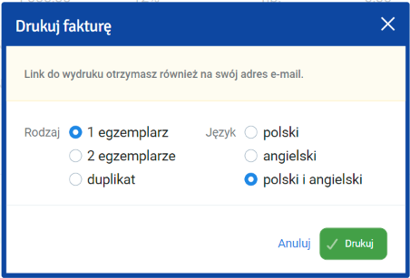
После печати статус фактуры сменяется на WYDRUKOWANO и она начинает считаться в налог на следующий месяц и в ZUS.
Также фактуру можно сразу отправить на e-mail клиента выбрав пункт Wyślij e-mailem
Оплата налогов¶
Важно
Убедитесь что все фактуры добавлены и в статусе WYDRUKOWANO или WYSŁANO, а так же все курсовые разницы за отчетный период внесены и учтены.
Узнать свой счет для уплаты налогов можно тут. Infakt получает номер счета автоматически при настройке.
Налог необходимо оплатить до 20го числа следующего месяца за отчетным. В infakt в разделе Księgowość -> Przegląd можно увидеть сумму для уплаты в текущем месяце исходя из выставленных фактур и внесенных курсовых разниц.
Есть два варианта оплаты:
- Вручную - из своего банковского приложения.
- С помощью infakt.
Вторая опция платная, стоимость зависит от суммы оплаты (что-то в районе 3-5 зл сам налог). Однако она самая простая и удобная, необходимо просто нажать Opłać z inFakt и подтвердить платеж в зависимости от способа оплаты.
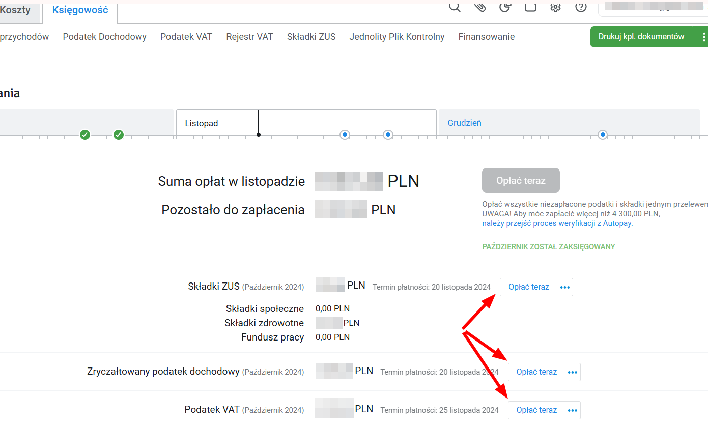
Оплата вручную происходит в банковском приложении.
На примере PKO
Выполните Przelew Podatkowy
- выберите секцию
Pozostałe - вводите в поиске
PPE - введите номер своего налогового счета
- введите за какой период оплачивается налог
- выберите в списке Typ identyfikatora
NIP - введите свой номер NIP
Выберите счет с которого хотите заплатить налог.
Имеет смысл платить с фирмового, так как в банках движение по счету может быть условием бесплатности пакета, введите сумму платежа со страницы infakt и совершите платеж.
По окончанию отметьте в infakt налог как оплаченный.

Составление декларации ZUS DRA и оплата взносов¶
Номер своего микро счета ZUS можно узнать на eskladka.pl. Настройка ZUS в inFakt описана тут.
До 20го числа каждого месяца (по состоянию на июль 2022) необходимо оплатить складку ZUS и отправить декларацию. Как и в случае с налогами, есть те же две опции для оплаты. Для платежей в ZUS комиссия infakt немного меньше (1-2 зл).
Для оплаты напрямую через приложение банка необходимо выполнить Przelew Krajowy, выбрать счет, с которого оплачивать (как писал выше, имеет смысл платить с фирмового):
- ввести получателя
- ввести номер своего микро счета ZUS
- Tytuł перевода не важен, можете указать для себя период оплаты, например "SKLADKA ZUS 06 2025"
Ввести сумму со странички infakt и совершить платеж.
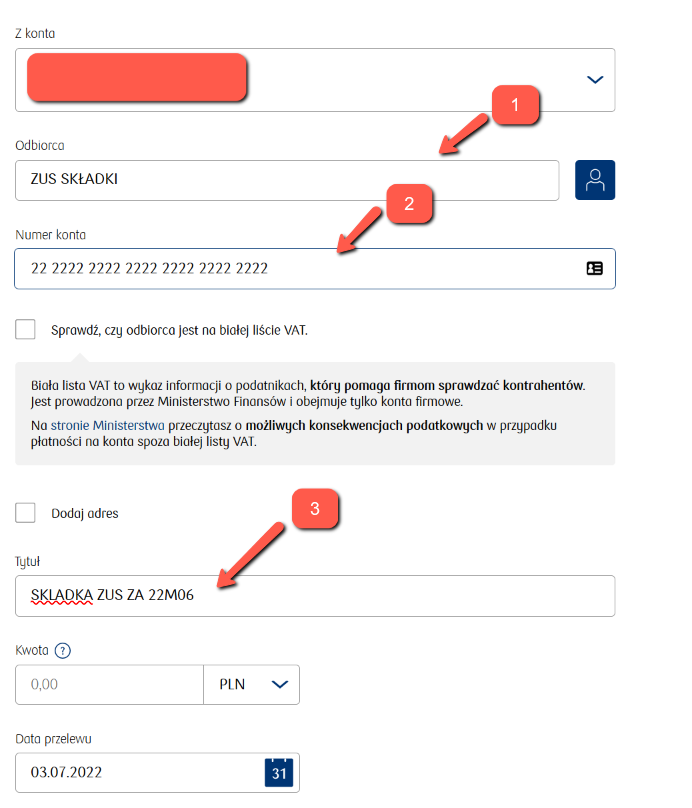
По окончанию отметьте складку как оплаченную.
Для генерации декларации файла ZUS DRA пройдите к нужной складке в списке складок (Przejdź do składki).
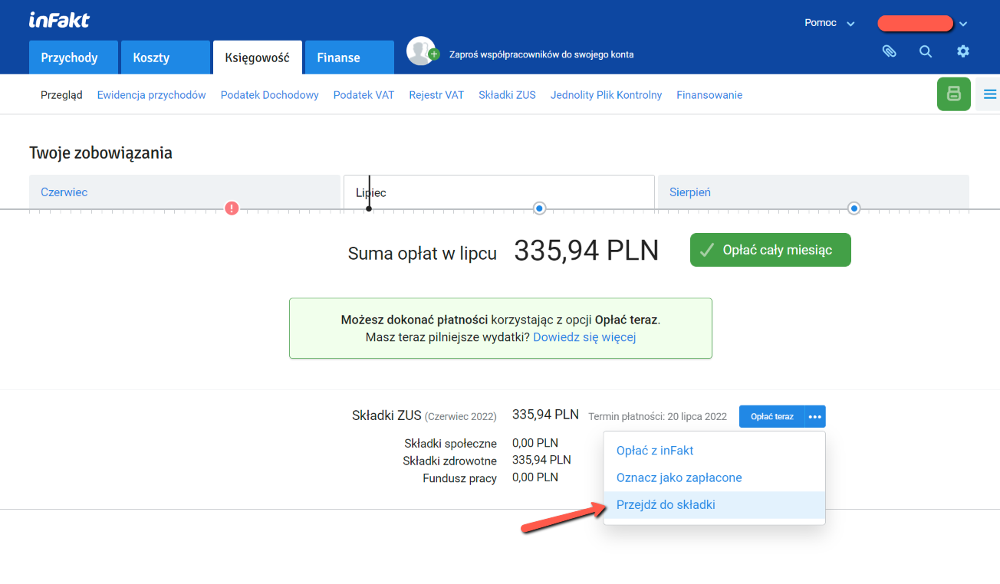
- Для истории имеет смысл прикрепить чек оплаты ZUS к записи в infakt (
Dodaj załącznik) - Нажмите
Pobierz ZUS DRAчтобы скачать файл DRA

Скачанный файл можно импортировать на портале ZUS. Альтернативно, можно создать такую же декларацию руками, но импорт файла немного быстрее.
Для импорта файла нужно зайти на портал ZUS, перейти на закладку ePłatnik в раздел Dokumenty и там выбрать Import KEDU.
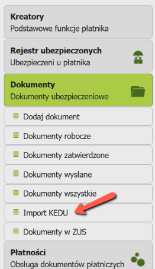
Смотрим на свои данные, жмем Dalej. На следующем экране ничего не выбираем, снова жмем Dalej пока не увидим кнопку "Wybierz plik...". Жмем и выбираем скачанный с инфакта xml файл декларации.

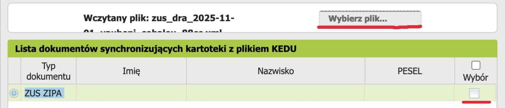
Если после импорта файла появится декларация ZIPA, то снимаем с нее галочку и жмем Dalej.
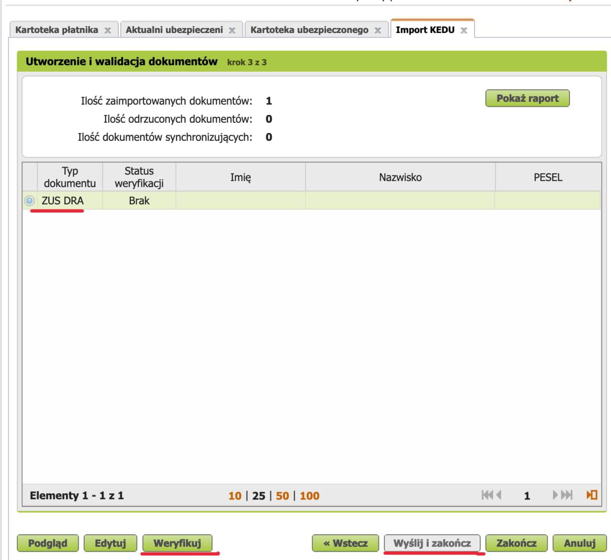
Теперь можно нажать Podgląd чтобы убедиться что декларация содержит ожидаемые вами цифры.
После этого нажмите Weryfikuj, а затем Wyślij i zakończ. Подпишите декларацию
профилем зауфаным и всё готово. Документ должен появиться в папке Dokumenty wysłane.
Получение оплаты и учет курсовых разниц¶
Info
При получении оплаты в иностранной валюте могут возникать курсовые разницы. Закон предписывает учитывать курсовые разницы - как положительные, так и отрицательные. Курсовая разница не трактуется как доход или расход, а является корректировкой дохода, поэтому учитывается при его подсчете.
Для учета курсовых разниц нужно знать курс (К1), по которому выставлена фактура, и курс нацбанка Польши (К2) на
последний рабочий день, предшествующий дате поступления оплаты. Если дата выставления фактуры отличается от даты продажи -
для (К1) берётся та дата, которая раньше. Если валюта с фирмового счета продается позже, то в
момент продажи валюты может возникать еще один курс (К3). Он определяется как фактический курс обмена при продаже валюты.
Фактический курс обмена можно узнать в случае обмена валюты на злотые. Если фактический курс обмена К3 не известен, то
как и в случае с поступлением оплаты он считается на предыдущий рабочий день от даты обмена валют. Перевод иностранной
валюты с валютного счета JDG на личный валютный счет не приводит к возникновению курсовой разницы, поскольку вывод этих
средств не связан с предпринимательской деятельностью.
🧮 Калькулятор К2 ≠ К1 (Транзакционные КР от доходов)
Kalkulator różnic kursowych - przychody w walucie obcej
🧮 Калькулятор К3 ≠ К2 (КР от собственных средств на валютном счёте)
Kalkulator różnic kursowych od własnych środków walutowych
🧮 Калькулятор (КР от расходов)
Kalkulator różnic kursowych - koszty podatkowe w walucie obcej
- В поле со звёздочкой следует ввести фактический курс обмена или оставить поле пустым, чтобы применить средний курс NBP с предыдущего рабочего дня предшествующего дню совершения операции.
Infakt Premium
Если у вас выбран план подписки Premium в Infakt, курсовые разницы будут учтены автоматически при отметке фактуры как оплаченной.
Если вы используете более дешевые планы подписки, вы можете воспользоваться следующей инструкцией.
Для внесения курсовой разницы (K2 != K1, или K3 != K2), необходимо добавить Dowód wewnętrzny. Для этого
перейдите в Przychody -> Faktury, и там:
- Кликните по "бургер-кнопке"
- Выберите
Dowód wewnętrzny
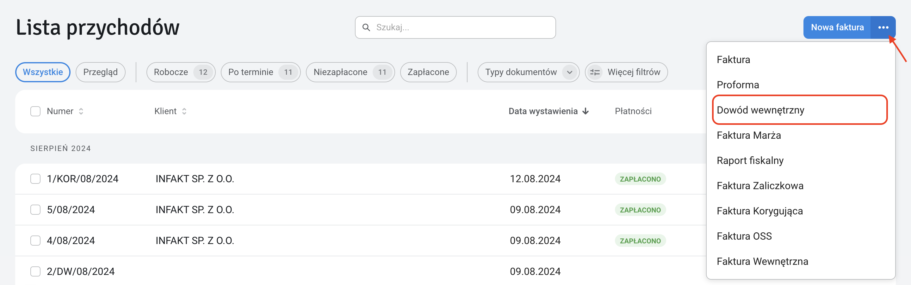
Тут выбираем:
Pozostałe przychody- вписываем
dodatnia różnica kursowaилиujemna różnica kursowaв зависимости от курсовой разницы - вводим сумму курсовой разницы (со знаком минус если она отрицательная)
- опционально можно добавить детали по курсам, которые считали

Записываем изменения и документ сразу начинает участвовать в расчете налоговой базы.
Отправка декларации VAT JPK_V7M¶
Предприниматель, зарегистрированный в белом списке как czynny плательщик ват обязан каждый месяц до 25 числа отправлять декларацию JPK_VAT за предыдущий месяц.
Перед отправкой убедитесь что вы внесли все затраты, с которых вы хотите списать VAT в кошты infakt. Также, убедитесь что все ваши фактуры учтены в расчете налогов, то есть вы их распечатали, отметили как оплаченные или выслали по email.
Теперь перейдите в меню księgowość -> Jednolity Plik Kontrolny и выберите месяц, за который вы хотите отправить декларацию.
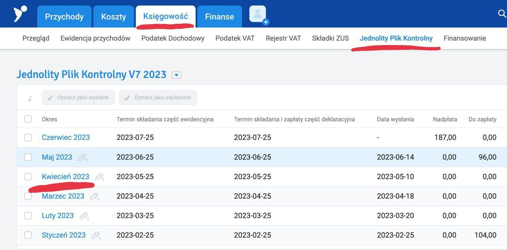
Убедитесь что сумма в декларации соответствует вашим ожиданиям.
Если у вас образовалась переплата по VAT и вы хотите вернуть ее на счет - то выберите в меню справа пункт Zwrot podatku и затем выберите подходящий вариант возврата VAT:
- 25 дней если выполнишь ряд условий, в т.ч. нужно минимум год быть czynnym плательщиком VAT.
- 60 дней можно выбрать если в отчетном месяце у вас были продажи и покупки с VAT или продажи за границу.
- 180 дней если у вас не было продаж с VAT или за границу, но вы что-то покупали на фирму.
- Возврат на VAT счёт (за 25 дней). Не требует дополнительных условий. Деньги с VAT счёта можно потратить только на налоги и ZUS.
Если вы не хотите ждать возврата VAT месяцами вы можете зачесть VAT в счет другого налога. Например, PIT-28 для ryczałt.
- Перейдите в меню zwrot podatku
- Впишите сумму надплаты в поле Kwota do zaliczenia na przyszłe zobowiązania podatkowe.
- Впишите словами в счет какого налога вы хотите внести переплату VAT. Например: PIT-28 za kwiecień 2026.
- При оплате подоходного просто платите меньше на эту сумму.
Законное основание: Art. 87
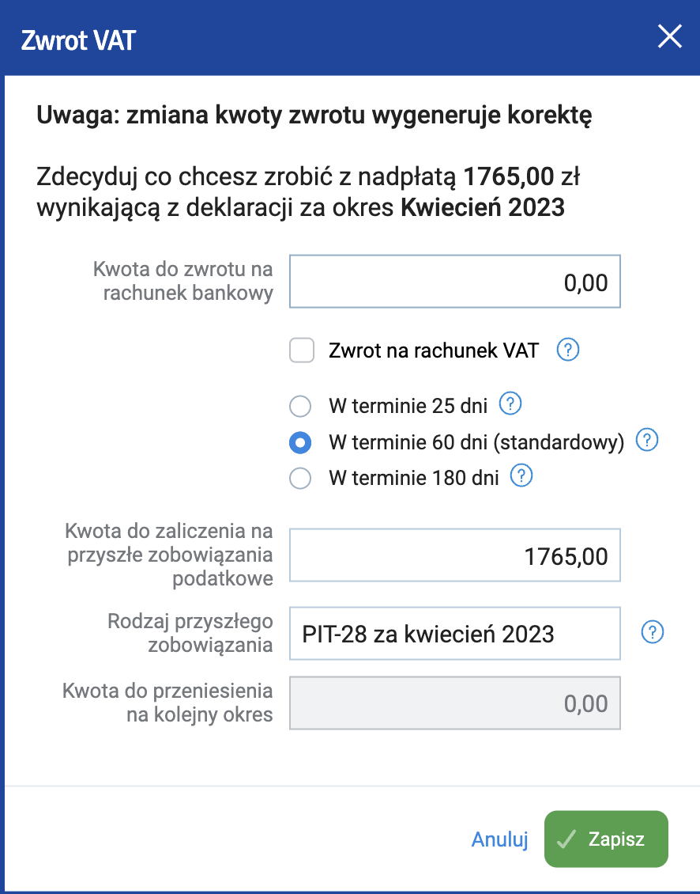
Нажмите zapisz.
Теперь можно выслать декларацию кнопкой Wyślij do urzędu.
Верифицируйте декларацию профилем зауфаным или суммой налога за предыдущий год.
В скором времени вы получите UPO от налоговой.
Отправка декларации VAT-UE¶
Если вы зарегистрированы в реестре VAT-UE то вы обязаны каждый месяц до 25 числа отправлять декларацию VAT-UE за предыдущий месяц. Однако, в отличие от JPK_VAT7, нет обязанности отправлять нулевые декларации VAT-UE если в отчетном периоде не было внутриевропейских операций.
Чтобы отправить декларацию VAT-UE перейдите в раздел księgowość -> Podatek VAT. Выберите нужный месяц, проверьте что нужные суммы подтянулись в декларацию из фактур и отправьте кнопкой Wyślij do urzędu.
Редактирование фактуры¶
Если после выставления фактуры была обнаружена ошибка (например неверная сумма инвойса вне зависимости сумма отличается в меньшую либо большую сторону) и за данный месяц ещё не были оплачены налоги и не было сформирована декларация ZUS DRA существует несколько вариантов исправления данной ошибки:
- Удалить выставленную фактуру и заново добавить новую с корректными данными. Стоит помнить, что если вы пользуетесь минимальным тарифом инфакт, то вам доступно 3 бесплатных фактуры в месяц, поэтому необходимо контроллировать подобные добавления, если в этом же месяце вам будет необходимо добавить какие-либо иные документы (например куровые разницы).
- Отредактировать неверную фактуру. Для этого из списка фактур (таба Przychody / Lista przychodów) зайти непосредственно на страницу фактуры, которую вам необходимо отредактировать, далее в правом верхнем углу нажать на кнопку
...и далее на кнопку Edytuj 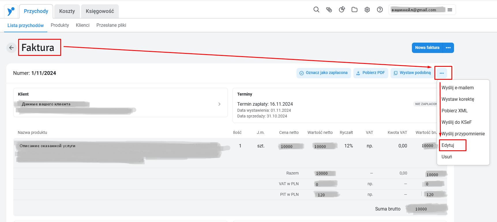
Отредактируйте вашу фактуру, и нажмите кнопку Zapisz в нижнем правом углу. 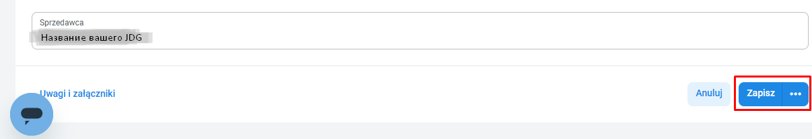
После сохранения вы можете удостовериться, что откорректированные данные были записаны верно зайдя в соответствующую эвиденцию в меню Ewidencja przychodów на вкладке Księgowość и проверив что сумма в эвиденции совпадает с суммой в фактуре.